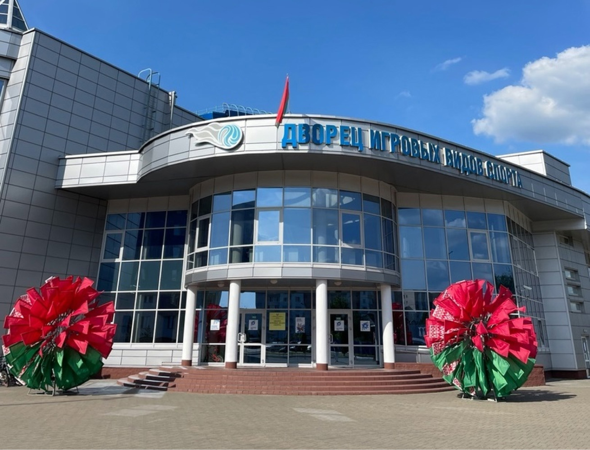

Главная площадка командной игры
С 2013 года волейбол и гандбол в Жлобине получили свой дом. Дворец игровых видов спорта, входящий в состав Центра олимпийского резерва, — это две арены под одной крышей: большой игровой зал с трибунами на 1500 зрительских мест и разминочный зал для предматчевой подготовки.
Во дворце тренируются отделения волейбола и гандбола Центра олимпийского резерва, проводятся соревнования районного, областного и международного уровней — по баскетболу, мини-футболу, всем видам единоборств, теннису и настольному теннису.
Показательный пример: воспитанница ЦОР Надежда Тишкова представляла Беларусь на молодёжном чемпионате Европы U-20 по пляжному волейболу и вместе с напарницей дошла до плей-офф. Вот уровень, с которого начинаются большие победы.
Пятнадцать сотен зрителей — это атмосфера, которую не расскажешь цифрами. Когда зал заполняется, каждая подача отдаётся в стенах, и юные волейболисты впервые понимают, что такое настоящий трибунный гул.